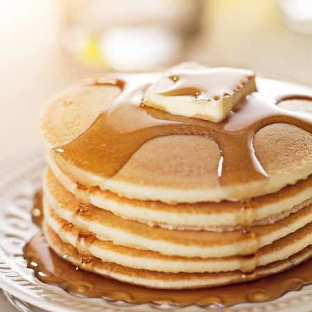

Home
Buttermilk Pancakes

Description
Buttermilk pancakes are fluffy, tangy, and delicious, everything you want in
a classic breakfast. The buttermilk reacts with baking soda to create extra lift,
making them light and tender inside with just the right amount of golden crisp on
the outside.
This recipe keeps it simple and reliable. Serve them stacked high with butter, maple
syrup, fruit, or your favorite toppings. They're perfect for a cozy weekend breakfast
or a special brunch.This recipe keeps it simple and reliable. Serve them stacked high
with butter, maple syrup, fruit, or your favorite toppings. They're perfect for a cozy
weekend breakfast or a special brunch.
Ingredients
- 2 cups all-purpose flour
- 2 tablespoons sugar
- 1 teaspoon baking powder
- 1 teaspoon baking soda
- ½ teaspoon salt
- 2 cups buttermilk (shake before using)
- 2 large eggs
- ¼ cup melted butter (plus more for greasing the pan)
- 1 teaspoon vanilla extract (optional)
- Toppings: butter, maple syrup, fresh berries, etc.
Steps
- Mix dry ingredients
- In a large bowl, whisk together the flour, sugar,
baking powder, baking soda, and salt.
- Make a well in the center to prepare for the wet ingredients.
- Mix wet ingredients
- In a separate bowl or measuring jug, whisk together
the buttermilk, eggs, melted butter, and vanilla
extract (if using).
- Stir until fully combined.
- Combine wet and dry
- Pour the wet ingredients into the well of the dry ingredients.
- Gently mix until just combined, some small lumps are okay.
- Do not overmix, or the pancakes may become tough.
- Cook the pancakes
- Heat a nonstick skillet or griddle over medium
heat and lightly grease with butter or oil.
- Pour ¼ cup of batter per pancake onto the hot surface.
- Cook until bubbles form on the surface and the edges
start to look set (about 2 to 3 minutes).
- Flip and cook another 1 to 2 minutes, until golden brown
and cooked through.
- Serve
- Serve hot with your favorite toppings: classic butter
and maple syrup, or get creative with fresh fruit, whipped cream,
or chocolate chips.
Tips
- Let the batter rest for 5 to 10 minutes before cooking to allow the flour
to hydrate and the baking soda to activate, this leads to fluffier pancakes.
- Keep pancakes warm in a 200°F (90°C) oven while cooking the rest,
so they're all hot and ready to serve together.